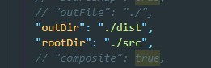

Существует два способа установки TypeScript: локально в проект и глобально на компьютер. Создадим простой проект и проинициализируем его с помощью команды:
npm init -yТеперь что бы установить TypeScript компилятор локально вводим команду:
npm install -D typescriptПосле этого в файлу package.json появится запись в разделе devDependencies
Так же, для того что бы пользоваться возможностями TypeScript из консоли понадобится установить TypeScript глобально, для этого в консоле вводим команду
npm install -g typescriptДля того что бы скомпилировать файлы нашего проекта в консоле просто вводим команду:
tsc script.tsгде script.ts - это имя файла который нам надо скомпилировать
Но на самом деле компилятор TypeScript намного шире и более того настройками компилятора мы можем управлять.
Для того что бы мы могли управлять компилятором нам надо в консоле набрать команду:
tsc --initПосле этого в папке с проектом у нас появится файл tsconfig.json, где в формате JSON находятся настройки компилятора
Допустим что наши файлы со скриптами находятся в папке src (как у webpack) и они должны компилироваться в папку build. Для того что бы разделять файлы-исходники от файлов продакшена, мы в файле JSON настроек компилятора находим два свойства: outDir и rootDir? их надо раскоментировать и в качестве значения указать путь относительно файла tsconfig.json
Т.е. outDir - это куда надо компилировать файлы JavaScript, а rootDir - это корневая папку откуда надо брать файлы TypeScript
Теперь что бы скомпилировать файлы (не важно сколько их) просто в консоле вводим команду
tscИ компилятор сам найдет все файлы TS в папке src, скомпилирует их в JS и перенесет в папку dist
Что бы каждый раз не вводить команду при изменении файлов, можно включить watch у TS, для этого в консоле вводим команду:
tsc -w